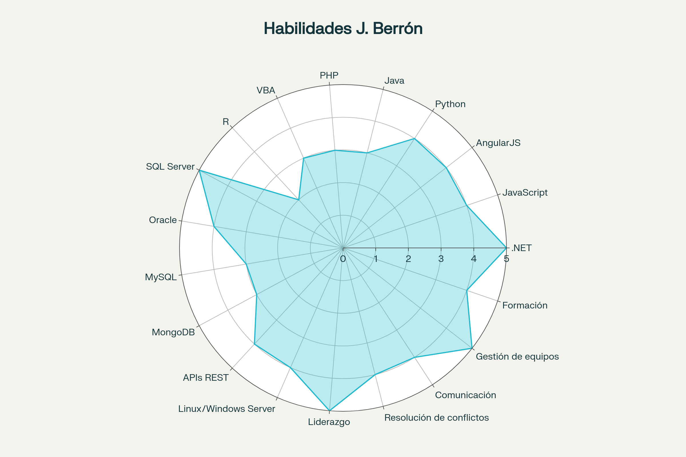

“Gestor de proyectos, arquitecto y desarrollador con más de 15 años de experiencia, apasionado por la mejora continua, tecnología y equipos multidisciplinares.”
Habilidades principales

Experiencia profesional
Formación académica
Certificaciones y logros
- Board Intelligence: Database, Capsule, Capsule II, Administrator (2017)
- MCAD.NET (Novatech, 2008)
- Matrícula honor – Proyecto Kinect To Windows 8
- Mención honorífica en sistemas funcionales